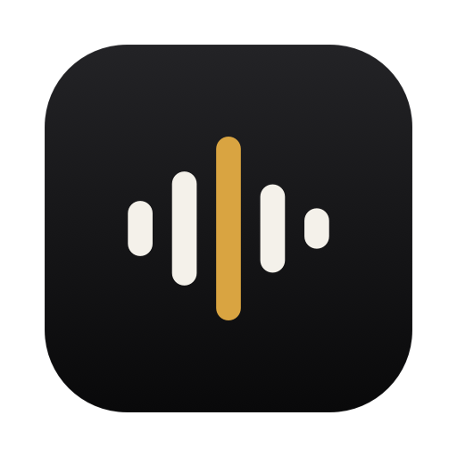

Tynda.Tynda is a small Mac app that lets you talk instead of typing. Your voice becomes text on your own Mac and is typed wherever your cursor is.
A small black island appears at the top of the screen while Tynda listens, with a live waveform of your voice. It never takes focus away from what you are typing in.
Hold fn, say the sentence, let go. About a second later the text is where your cursor was — a chat, an email, a terminal, a search box.
Tap fn twice and take your hand away. Talk for a minute or ten. Press fn once more and the whole thing is typed.
Esc throws it away and nothing is typed. If the text landed in the wrong place, the last phrase is still one click away in the menu.
Your voice is recognised on your Mac by Whisper large-v3-turbo running through Apple's MLX. Once the model is downloaded, Tynda works with the network cable pulled out.
Tynda is not for every computer. Check this before you spend time on the install.
| Mac | Apple silicon — M1 or newer. Intel Macs are not supported: the speech model does not run on them. |
| macOS | 14 Sonoma or newer. |
| Memory | 8 GB minimum, 16 GB recommended. The model stays loaded and takes about 2 GB. |
| Disk | About 3 GB for the model and its Python packages. |
| Keyboard | The fn / 🌐 key set to "Do Nothing" in System Settings → Keyboard. If fn is taken, pick Option, Control, the right Command or an F-key in the setup window. |
| Languages | English, Russian and Kazakh out of the box. Add yours from a list of 60-odd in the setup window. |
| Not yet | Windows, Linux, iPhone. |
There is no signed download yet, so Tynda is installed from source. You need the Xcode Command Line Tools. The script does the rest, then a setup window walks you through the permissions and your first dictation.
git clone https://github.com/Markerloop-Team/tynda.git
cd tynda
./install.sh # checks your Mac, gets the model, builds, opens Tynda
Tynda is a few days old and has been used on one Mac. It works on its author's Mac; it has not met yours yet.
It is not signed with an Apple Developer ID, so macOS asks for the permissions again after every update. What changed in each version is on the releases page.
If it breaks, open an issue and attach ~/Library/Logs/Tynda.log.